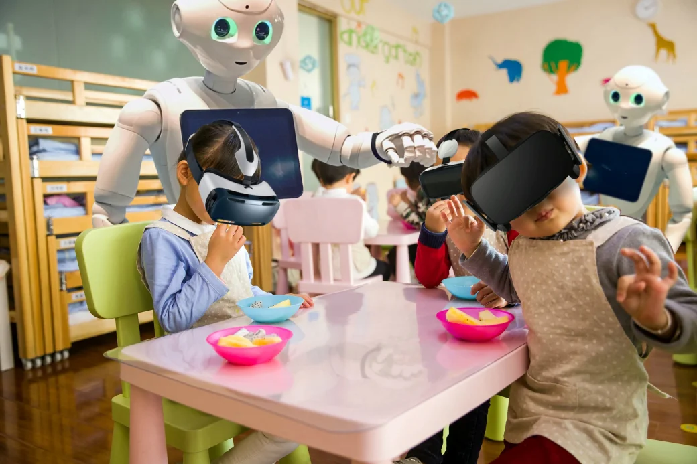

We all know that extnesive use of anything is bad, Let us see what will be different problems people will face in the year 2050.
- As People will be using machines, gadgets and robots in almost every area due to this people will become more lazy.
- People of that time will be more materialistic.
- There will be no emotional Relationship between people
- Due to Deforestation there will be less trees and greenery
- There will be communication gap between Parents and kids as parenting will be done by Robots.
- Mental illness will be the New Pandemic, environmental issues will lead to elevated levels of health issues and threats.
Back to Home Page